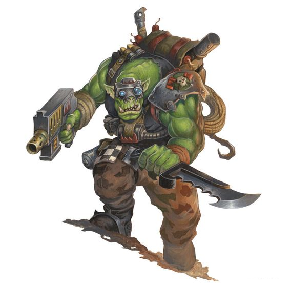
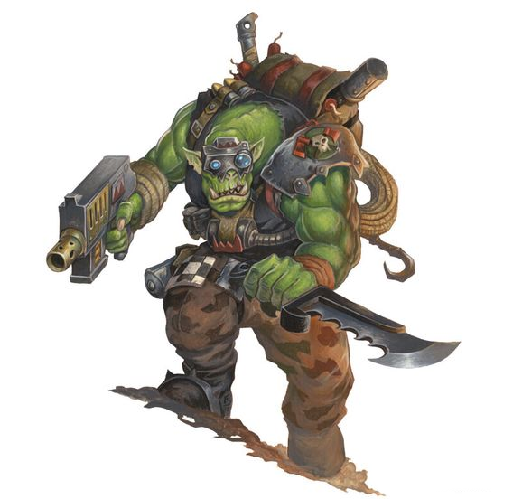
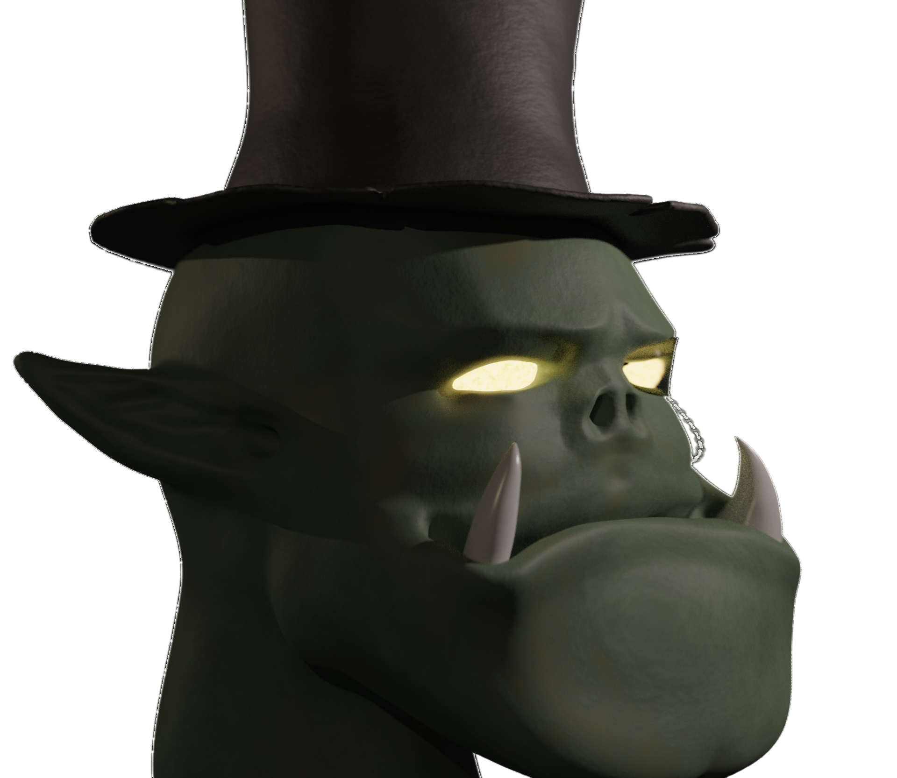
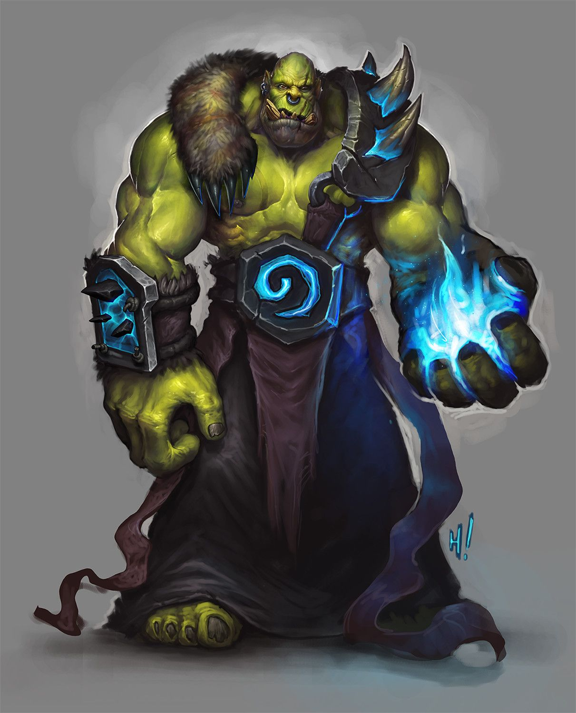
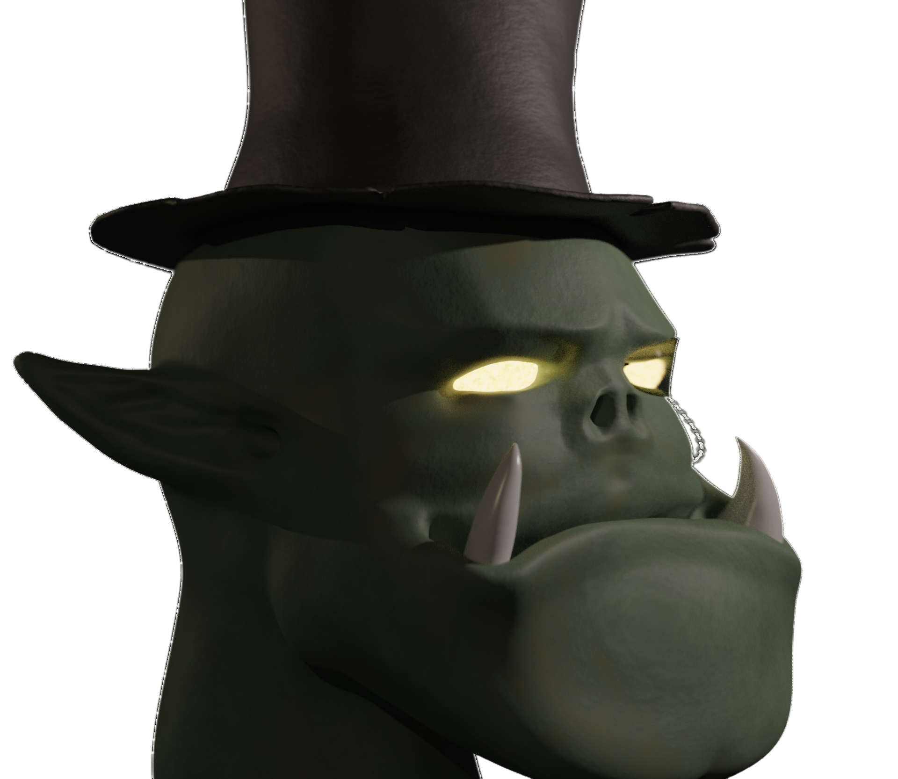
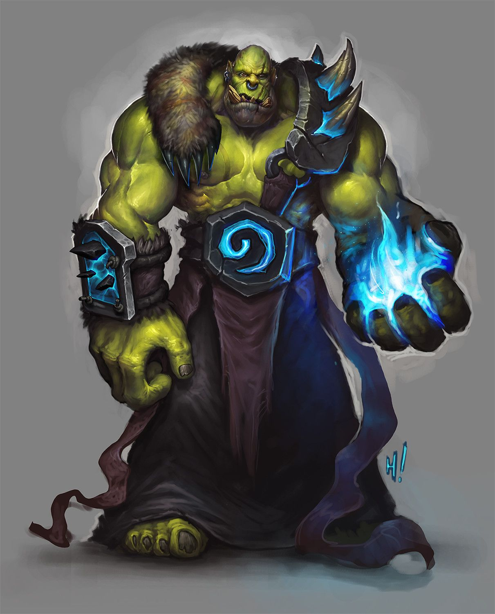

Орки — мощные зеленокожие громилы, живущие бок о бок с гоблинами. Имеют слегка укороченые по сравнению с человеческими пропорциями ноги и руки, однако мышечная масса намного больше. Очень часто горбатятся. Имеют широкую, слегка вытянутую, голову, округлую сверху. Челюсть большая, прямоугольная, соразмерна самой голове. Из челюсти торчат направленные вверх, большие клыки. Волосяной покров является редкостью, но возможен. Нос почти плоский, широкий. Уши вытянуты вверх, но относительно головы малы. На лице часто появляются морщины.
Рост: 180 см и более
Продолжительность жизни: в среднем до 122 лет
Цвет кожи: зелёный, оттенки варьируются от бледно-бирюзового до жёлто-зелёного
Глаза: чаще всего жёлтые, с тёмным вытянутым вверх, узким зрачком. Иногда встречаются и прочие цвета.
Размер: большой. Рост от 175 до 195 см.
Вес: от 100 кг
Скорость: 30
| Умение | Описание |
|---|---|
Увеличение характеристик |
Сила +2, Телосложение +1 |
Спорт это жизнь |
В случае провала любого спасброска, вы можете реакцией совершить дополнительный спасбросок Силы, добавив выпавшее значение. Критический успех дополнительного спасброска заменяет предыдущее значение. Это умение нельзя использовать снова, пока вы не завершите Короткий или Продолжительный отдых. Также, при проверках атак оружием, вместо Ловкости вы можете использовать Силу. |
Неистовый ор |
Реакцией, в любой момент, вы можете прийти в ярость, и во всю глотку заорать. Все ваши союзники в радиусе до 60 фт, включая вас, услышавшие этот рёв, на 18 секунд имеют преимущество при проверках и спасбросках Силы, а также любые атаки Оружием или Заклинаниями добавляют к итоговому урону ещё 2 кости урона этого Оружия или Заклинания. Это умение нельзя использовать снова, пока вы не завершите Продолжительный отдых. |
На массе |
Значение бонуса к здоровью от модификатора Телосложения увеличено на 1. Также, использование умения Неистовый ор даёт всем услышавшим рёв союзникам +1 КЗ до конца боя. |


 
   
 